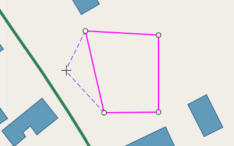
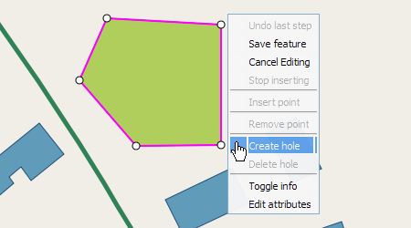
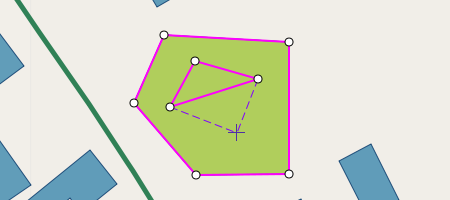
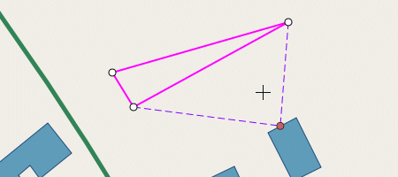
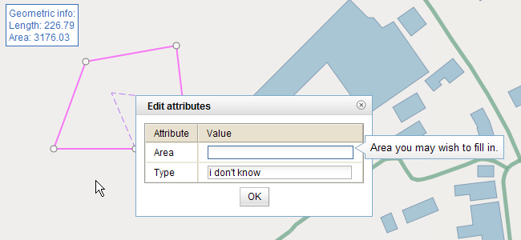
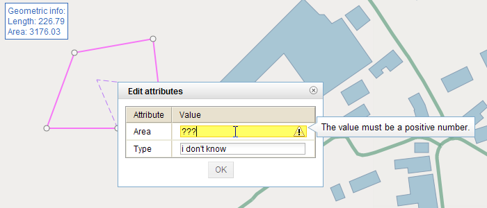
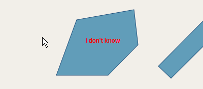

Editing mode
Editing always begins by enabling editing mode. This can be done by activating
the edit-tool ( )
in the toolbar.
)
in the toolbar.
At this point nothing will happen if the left mouse is clicked on
the map. Instead the user should first of all choose whether he wants to
create a new feature, edit an existing feature or delete an existing
feature. For each of these cases, there is a condition. To create a new
feature for example, the user has to select a layer first. For editing
or deleting an existing feature, the user has to select a feature first.
Since the editing controller also has selecting capabilities, selecting
a feature can simply be done by clicking on one. Selecting a layer on
the other hand is not possible on the map itself. Usually there is a
LayerTree widget present that allows the user to select a layer.
Editing shapes
Create a new feature
As mentioned above, the creation of a new feature requires the
user to select a layer first. Select layers can be done in the layer
control, by clicking on them. It is this layer, the feature will be
created in. Simply click the RIGHT mouse button on the map, and a menu
will appear. At the top of this menu, you will see "Create new feature".
Select this option to start.

After the "Create new feature" option has been selected, editing
has started. To create a new feature, you to place points (it's
vertices) on the map. Simply start clicking to place new points on the
map. As will be explained later, editing has 2 basic modes to function
in. "Insert-mode" and "drag-mode". Creating a new feature always starts
in "Insert-mode". Insert mode basically means that you can add new
points to the geometry by clicking on the map, but more on that later.
Edit an existing feature
To start editing an existing feature, it is necessary to select
the feature you want to edit first. Since the editing controller has
selecting capabilities, this can be done by clicking on it (or use right
mouse click, and select "Toggle Selection"). After a feature has been
selected, you can click the right mouse button on it again to have the
option menu pop up again. This time select "Start editing". You will see
that the selected feature suddenly has a whole different appearance
(with pink lines, and white circle). This is it's editable view. From
here on, you can drag points, insert new points, etc...
Delete an existing feature
To delete an existing feature, it is necessary to select it
first. Since the editing controller has selecting capabilities, this can
be done by clicking on it (or use right mouse click, and select "Toggle
Selection"). After a feature has been selected, you can click the right
mouse button on it again to have the option menu pop up again. This time
select "Delete feature". The system will ask for confirmation, but after
that the workflow will take over and start the deletion process (which
usually means immediate deletion, unless otherwise specified).
Insert Mode
In the previouse paragraphs, we often mentioned the 2 different
editing modes "Insert mode" and "Drag mode". We will start with the
explanation of the "Insert mode". This mode allows the user to
insert/add new points into the geometry by clicking on the map. Once
there is at least one point, you may also notice one or two lines
following you mouse cursor as you move it. These lines emphasize where
the next point will be when you click again, and how this will affect
your geometry (see figure below). There is a limitation though! It is
not allowed for a polygon to intersect itself, so when dealing with
polygons or multipolygons, no points will be inserted if they result in
crossing edges.

After clicking a few times on the map, a geometry begins to take
shape. At this point you may feel you want to change something, or
perhaps you feel everything is as it should be. It is time to check our
options again. Again this can be done by using the RIGHT mouse button,
and again a options menu will appear, but a different one this time:

At this point there are 4 options:
-
Stop inserting :
Selecting this option will change editing mode to drag mode. There is
no turning back to insert-mode once you select this, but don't worry,
you'll still be able to insert additional points into the geometry.
-
Undo last step :
Every change in the geometry's form is seen as an action that can be
undone. This means changes like the insertion of a new point, the
deletion of a point, the dragging of a point, ... All these actions are
stored in a stack, and all of them can be undone again.
-
Save featue : This
option seems pretty straightforward. It will save the current geometry
(whether we are creating a new feature, or editing an existinf one).
But this is not entirely true. Actually it will start a predefined
workflow for handling persistance. The default workflow will indeed
immediatly save everything.
-
Cancel Editing : This
option will stop editing. This means that no existing feature is still
being edited or no new feature is being created, but we are still in
general editing mode. Just like in the beginning of this chapter, it is
possible to choose again whether to create a new feature, edit an
existing one, or delete an existing one.
-
Show Info : Enabling
this will display some geometric information in the top left corner of
the map. This information holds the current length, and area of the
geometry.

Drag Mode
Once in drag mode it is no longer possible to add new points to
the geometry by simply clicking on the map. Instead other options now
lie before you. It is now possible to drag all the points to other
locations. Standard drag mode looks like the picture below:

Again it is possible to view you options by rightclicking on the
map. This time the menu will look differently, depending on where you
click. By simply clicking somewhere at random, you'll get the following
menu:

If you open the menu by right-clicking on one of the points,
you'll get a different menu, in which an extra option has appeared. The
"Remove point" option gives you the opportunity to remove the point in
question:

Yet another possibility is to open the menu by right-clicking on
one of the edges of the geometry. This will present you with a new
option: "Insert point". As the name of the option suggests, this will
insert a new point into the geometry, at the exact same spot you
right-clicked. Of course you can easily drag it somewhere else.

Holes in polygons
In the previous section, we showed part of the creation of a new
polygon. Let us now assume, this polygon has been saved successfully, and
we want to create a hole inside this polygon. Notice that holes can only
be created in polygons or multipolygons. A linestring object can never
contain a hole, and as a result, the options for creating and deleting
holes will only be present when dealing with polygons/multipolygons.
Creating a hole is actually a lot like creating a new feature. It starts
again in "insert mode", until the user selects "stop inserting". Since
by definition a hole must be entirely inside the shell, it is not
allowed for points of a hole to lie on or out of the outer shell. Also,
a hole inside a hole will not be allowed!

Create the hole by adding points, just like creating a new geometry:

An example of a polygon with a hole:

After a hole is created, it must also be possible to delete it
again, without deleting the entire polygon. To do this, one can start
editing the feature again, and simply right-click in the middle of a
hole. The "Delete hole" option will now be available, and by selecting
it, the hole will effectively dissapear. The following image shows a
polygon where the hole is deleted, but not yet saved.

Using snapping
First of all, snapping is a setting that can be activated and deactivated
for each layer independetly. To activate snapping for a certain layer, first
select that layer in the layertree, and then press this button:
 .
Beware that snapping only works on vector-layers!
.
Beware that snapping only works on vector-layers!
Editing can be done with or without snapping. If snapping for the
layer in question is activated, the insertion of new points as well as
the dragging of existing points will be influenced by snapping points.
How this influence presents itself depends on the type of snapping,
defined for the layer. Usually, it means that if the mousecursor comes
within a certain distance from snapping points, the next click will have
the snapping point as coodinates.

See the above picture for clarification. You may notice that the
purple lines do not cross at the mousecursor's coordinates as was the
case in normal insert mode. This is because in this example there is a
snapping rule that allows snapping to the nearest point in the structures layer.
If the user would click in this situation, the new point would not
appear at the mousecursor's coordinates, but where the purple lines
cross (at the red dot).
Splitting and merging polygons
Splitting polygons
Besides operations on singel features, in the case of polygons,
it is also possible to split an existing polygon or multipolygon.
Actually the process of splitting if very analogous to the creation of a
linestring geometry. The first step is to select the polygon we wish to
split. After that, you can start the splitting process by right-clicking
on the selected polygon, and selecting the "Start splitting" option, as
shown below:

At this point, you can start drawing a linestring object that
will eventually split the polygon. Just like the editing process, we
start in "insert-mode" and can add new points to the linestring by
clicking on the map. Again it is possible to switch to drag-mode to
handle individual points, by dragging or deleting them again, or
inserting new points on the edges. You can tweak the splitting
linestring to your liking until you decide to actualy save the
splitting. Another options during splitting is the "Show info". Unlike
the "Show info" during editing, this option now shows the geometric
information of what will be the new polygons.

Merging polygons
If splitting is possible, it must also be possible to merge them
again. And so it is! The process of merging polygons is a simple one.
Just select polygons that actually touch each other, right-click, and
select "Merge polygons". That's all there is to it.

And here is the result:

Editing the attributes
While you are busy editing the geometry of a feature or creating a new feature,
it is always possible to edit it's attributes as well. By simply clicking the right
mouse button as before, and selecting "Edit Attributes". An example is shown while
creating a new feature for the structures layer:

But there is more to it! Each of the attributes that have been defined,
can be given a few constraints to which it's values have to apply. In the case
of the "Area" attribute for example, we have configured to only allow positive numbers.
See what happens when the given value is not accepted by the constraints:

Another nice little detail is that the "Type" attribute is also configured as
the label attribute for that structures layer. This means that when the labels are
activated, you can see the values as they were given in the attribute editor screen:
